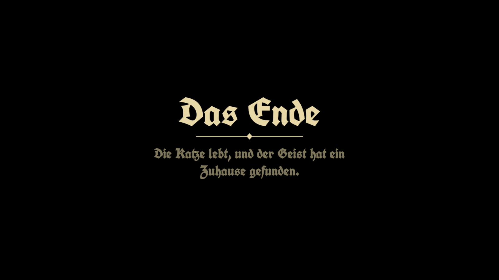
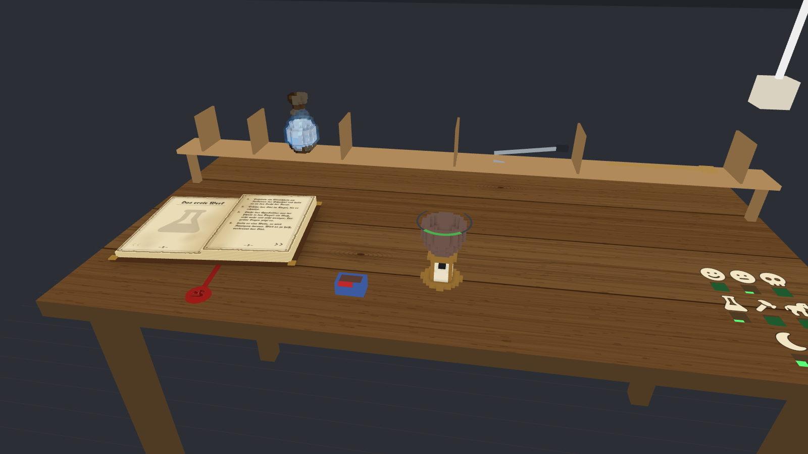
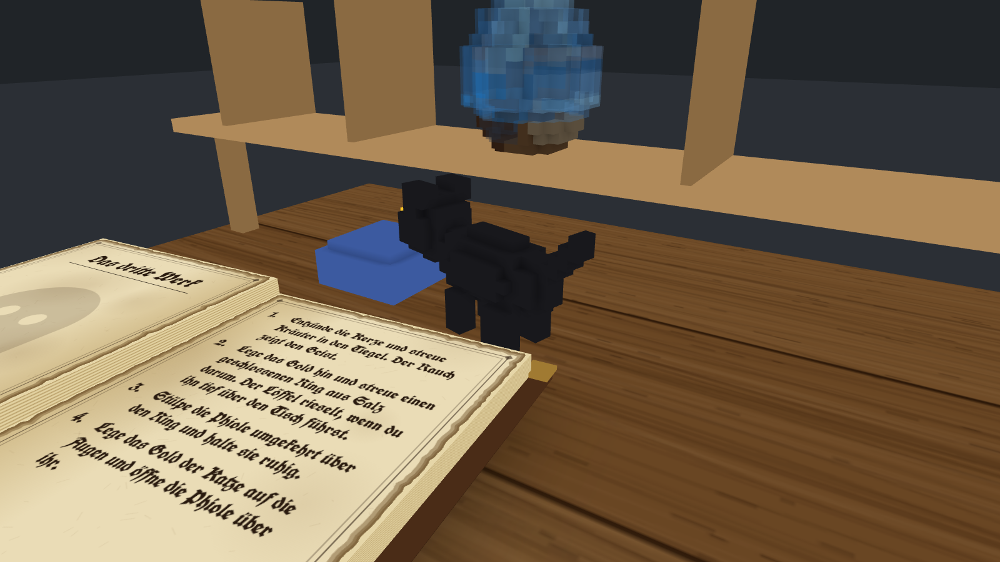

Alchemist VR
A voxel alchemist for WebXR on Meta Quest. Game jam entry, theme: Magic.

The game
You stand at a real table, a virtual one on top of it: a candle, a crucible, a shelf of tools and an old book of instructions. Three experiments, one after the other:
- Lead and mercury. Strike a match, light the candle, melt the lead, pour the mercury into the green window. Too hot, too long, and it burns.
- The gold. Add sulfur with the long spoon, keep it hot, stir with the rod, take the gold out with the tongs.
- The ghost and the cat. Burn herbs for smoke, draw a closed salt ring around the gold, catch the ghost with the upside-down vial, give the straw cat its golden eyes and let the ghost in.


How to play
- Quest, controllers. Open this page in the Quest browser and press the VR button. Hands (hand tracking) also work.
- Set the table. Tap the real table's top with the end of a tool, three quick taps at its front edge, then three more farther along the edge. It remembers it. The white areas show where a tap does not count.
- Desktop. Mouse only, no headset needed.
| Controllers | Desktop | |
|---|---|---|
| Take a hand tool | grip button at its place on the shelf (tongs, spoon) | - |
| Hold the vial, take a match or the gold | trigger, with the tongs | drag / click |
| Scoop sulfur, herbs, salt | trigger at the dish, with the spoon | click the dish |
| Stir | take the rod with the trigger (any hand) | drag |
| Pour | tilt the vial | Shift + drag up/down |
| Settings (look, background, difficulty) | tap a button with the tool tip | click |
| Turn the book | tap its lower corners | arrow keys |
| Start over | pull the cord of the lamp | R |
Three difficulty levels change the windows and the time you have. A symbol shows the next step when you are stuck (not on hard).